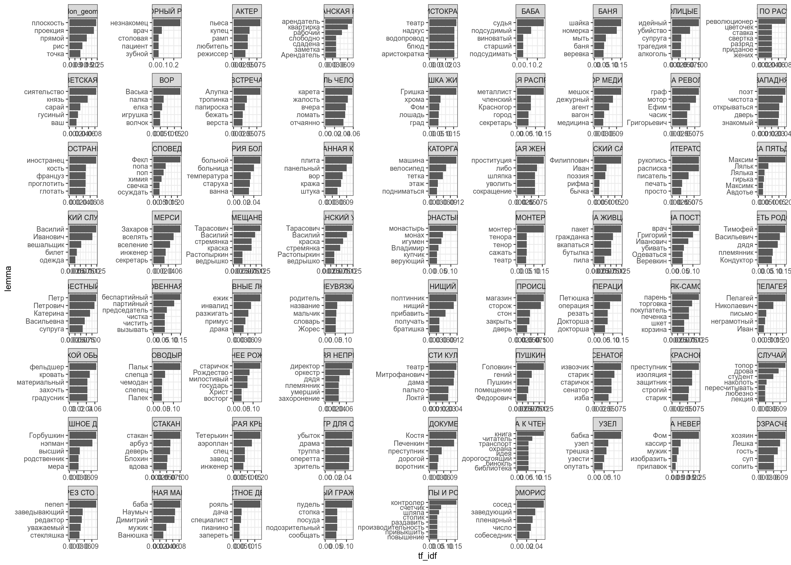
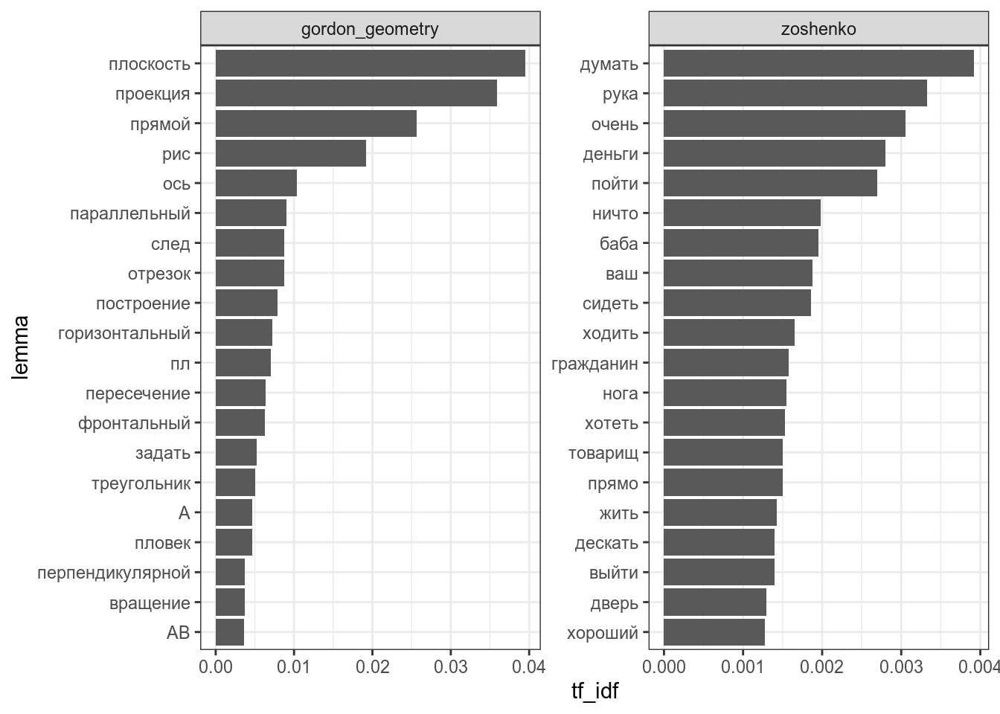
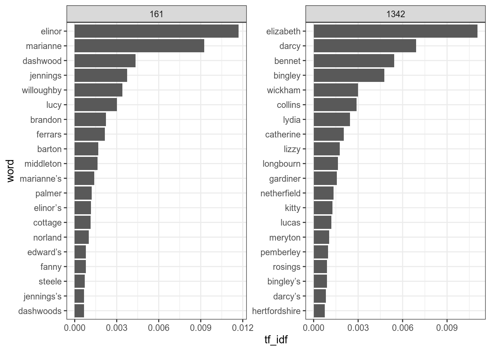
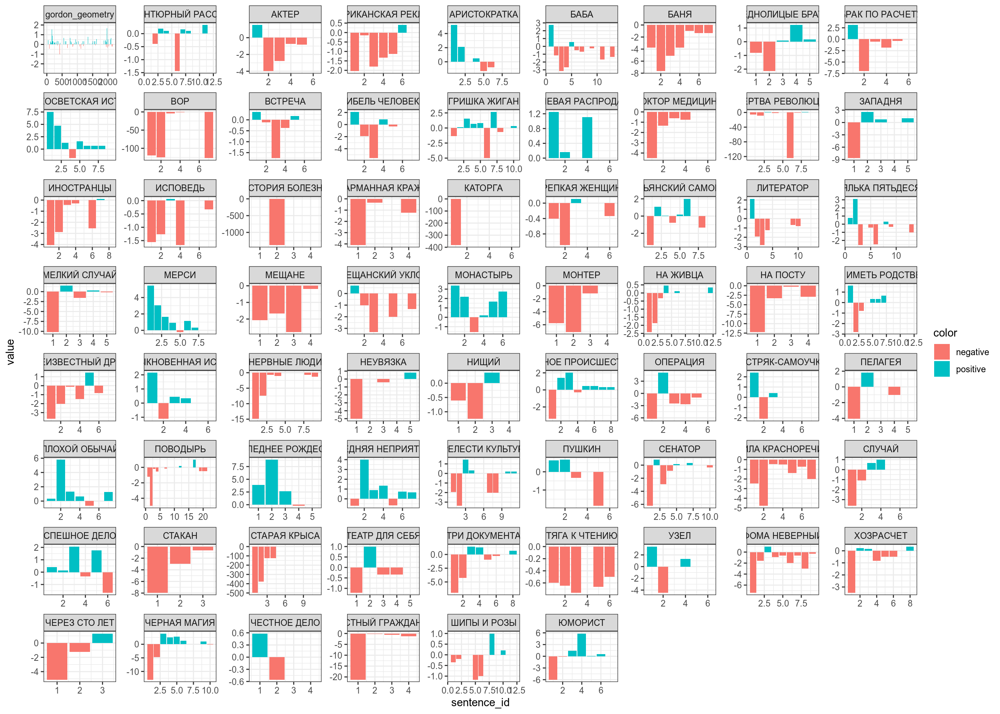
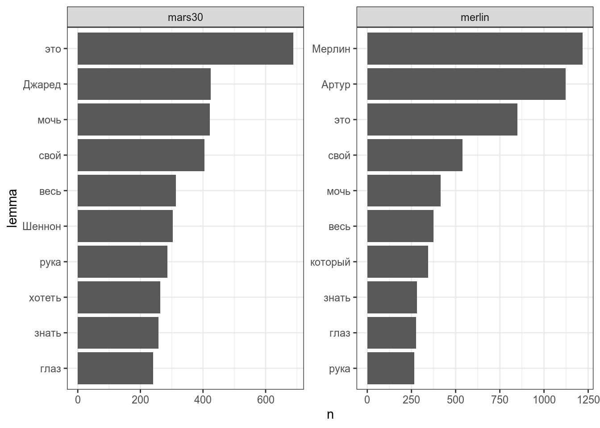

6 Анализ текста
6.1 Данные
Для работы мы воспользуемся двумя датасетами:
- Рассказы М. Зощенко
zo <- read_csv("https://raw.githubusercontent.com/agricolamz/2020_HSE_DPO/master/data/zoshenko.csv")
zo- Курс начертательной геометрии под редакцией В.Гордона
geom <- read_csv("https://raw.githubusercontent.com/agricolamz/2020_HSE_DPO/master/data/gordon_geometry.csv")Для начала лемматизируем полуичвшиеся тексты:
library(udpipe)
rus <- udpipe_load_model("russian-syntagrus-ud-2.4-190531.udpipe")
geom_tokenized <- udpipe(geom, object = rus)
zo_tokenized <- udpipe(zo, object = rus)Уберем стопслова и леммы, содержащие цифры и знаки препинания
library(stopwords)
sw <- tibble(lemma = stopwords(language = "ru"))
geom_tokenized %>%
bind_rows(zo_tokenized) %>%
filter(!str_detect(lemma, "\\W|\\d")) %>%
anti_join(sw) %>%
select(doc_id, sentence_id, lemma) ->
all_texts
all_texts
Используйте библиотеку gutenbergr и скачайте “Чувство и чувствительность”(Sense and Sensibility, gutenberg_id = 161) и “Гордость и предубеждение” (“Pride and Prejudice,” gutenberg_id = 1342). Приведите тексты к tidy формату и уберите стопслова (английские стопслова есть в переменной stop_words пакета tidytext).
- Приведите, сколько получилось слов в романе “Чувство и чувствительность” после удаления стопслов:
- Приведите, сколько получилось слов в романе “Гордость и предубеждение” после удаления стопслов:
6.2 tf-idf
tf-idf — важная мера, которая позволяет выделять важные для текста слова.
\[tf = \frac{количество\ употреблений\ единицы\ в\ тексте}{количество\ единиц\ в тексте}\] \[idf = log\left(\frac{количество\ документов\ в\ корпусе}{количество\ документов\ с\ исследуемой\ единицей}\right)\] \[TfIdf = tf \times idf\]
library(tidytext)
all_texts %>%
count(doc_id, lemma) %>%
bind_tf_idf(lemma, doc_id, n) %>%
arrange(tf_idf) %>%
group_by(doc_id) %>%
top_n(5) %>%
ungroup() %>%
mutate(lemma = reorder_within(lemma, tf_idf, doc_id)) %>%
ggplot(aes(tf_idf, lemma))+
geom_col()+
facet_wrap(~doc_id, scales = "free")+
scale_y_reordered()
Давайте попробуем посчитать всего Зощенко одним корпусом:
all_texts %>%
mutate(doc_id = ifelse(doc_id != "gordon_geometry", "zoshenko", "gordon_geometry")) %>%
count(doc_id, lemma) %>%
bind_tf_idf(lemma, doc_id, n) %>%
arrange(tf_idf) %>%
group_by(doc_id) %>%
top_n(20) %>%
ungroup() %>%
mutate(lemma = reorder_within(lemma, tf_idf, doc_id)) %>%
ggplot(aes(tf_idf, lemma))+
geom_col()+
facet_wrap(~doc_id, scales = "free")+
scale_y_reordered()
Используя созданную ранее переменную с текстами Джейн Остин без стопслов, выделите по 20 слов, важных для каждого романа.

6.3 Предиктивный ввод текста
На прошлом занятии мы разобрались, что пакет tidytext позволяет делить не только на отдльные слова, но и смотреть на биграммы. Частотность биграмм можно использовать в подсказке слова, которую мы видим в наших телефонах:
zo %>%
unnest_tokens("bigram", text, token = "ngrams", n = 2) %>%
separate(bigram, into = c("word_1", "word_2")) %>%
count(word_1, word_2, sort = TRUE) ->
bigramsТеперь у нас есть биграмы:
bigrams %>%
filter(word_1 == "однажды")bigrams %>%
filter(word_1 == "днем")bigrams %>%
filter(word_1 == "присела")bigrams %>%
filter(word_1 == "ждет")bigrams %>%
filter(word_1 == "а") %>%
head()bigrams %>%
filter(word_1 == "я") %>%
head()bigrams %>%
filter(word_1 == "говорю") %>%
head()bigrams %>%
filter(word_1 == "не") %>%
head()bigrams %>%
filter(word_1 == "могу") %>%
head()Вот мы и получили предложение “Однажды днем присела ждет, а я говорю: ‘не могу’.” На большом корпусе результаты будут лучше, но легко предсатвить, как сделать из этого рабочую функцию. Можно переиначить задачу и работать с символами, тогда это будет ближе к T9 на современных телефонах.
Используя тексты обоих романов создайте генератор текстов, основанный на биграммах. Какое трехсловное предложение получится, если выбирать самое частотную пару, и начать со слова I?
6.4 Анализ тональности
- Linis Crowd
- лемма
- значение
- среднеквадратичное отклонение
- РуСентиЛекс:
- слово или словосочетание,
- часть речи или синтаксический тип группы,
- слово или словосочетание в лемматизированной форме,
- тональность: позитивная (positive), негативная(negative), нейтральная (neutral) или неопределеная оценка, зависит от контекста (positive/negative),
- источник: оценка (opinion), чувство (feeling), факт (fact),
- если тональность отличается для разных значений многозначного слова, то перечисляются все значения слова по тезаурусу РуТез и дается отсылка на сооветствующее понятие - имя понятия в кавычках.
Мы будем использовать датасет, составленный на базе Linis Crowd
ru_sentiments <- read_csv("https://raw.githubusercontent.com/agricolamz/2020_HSE_DPO/master/data/ru_sentiment_linis-crowd.csv")
all_texts %>%
group_by(doc_id) %>%
left_join(ru_sentiments, by = c("lemma" = "words")) %>%
mutate(value = ifelse(is.na(value), 0, value)) %>%
group_by(doc_id, sentence_id) %>%
summarise(value = sum(value)) %>%
mutate(color = ifelse(value >= 0, "positive", "negative")) %>%
ggplot(aes(sentence_id, value, fill = color))+
geom_col()+
facet_wrap(~doc_id, scales = "free")
6.5 Тематическое моделирование
LDA (Latent Dirichlet allocation) — один из базовых способов, используемый в тематическом моделировании. Основное идея алгаритма, заключается в том, что каждый текст может являтся смесью тем, а каждая тема имеет вероятность более высокую вероятность генерировать некоторые слова, и более низкую вероятность генерировать слова общие для всех тем. На вход подается посчитанный список слов для каждого текста.
library(topicmodels)
all_texts %>%
count(doc_id, lemma) %>%
cast_dtm(doc_id, lemma, n) %>% # особая функция
LDA(k = 2, # количество тем
control = list(seed = 42) # повзоляет воспроизвести один и тот же анализ, можно убрать
) ->
ldaПосмотрим, какие слова характерны для какой темы (т. е. самые частотные в теме):
lda %>%
tidy(matrix = "beta") %>% # приводим модель в tidy формат
group_by(topic) %>%
top_n(15, beta) %>%
ungroup() %>%
mutate(term = reorder_within(term, beta, topic)) %>%
ggplot(aes(term, beta, fill = factor(topic))) +
geom_col(show.legend = FALSE) +
facet_wrap(~topic, scales = "free") +
coord_flip() +
scale_x_reordered()
Посмотрим, какие слова специфичны для каждой из тем (т. е. частота значительно больше в одной теме, чем в другой):
lda %>%
tidy(matrix = "beta") %>%
mutate(topic = paste0("topic", topic)) %>%
spread(topic, beta) %>%
filter(topic1 > .006 | topic2 > .002) %>% # эти значения нужно вручную подбирать
mutate(log_ratio = log2(topic2 / topic1),
term = fct_reorder(term, log_ratio)) %>%
ggplot(aes(log_ratio, term))+
geom_col()
Посмотрим на распределение текстов по темам:
lda %>%
tidy(matrix = "gamma")